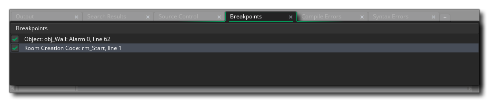
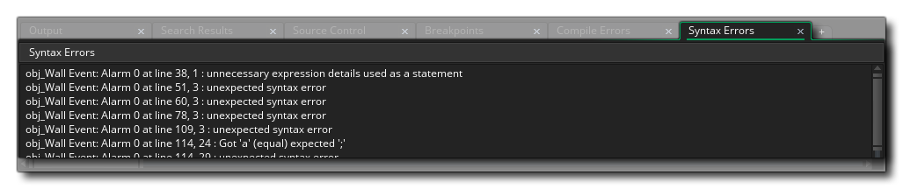

Cuando abra un proyecto en GameMaker Studio 2 por primera vez, se le presentará el Muelle de Salida en la parte inferior de la pantalla. Esta ventana acoplada contiene varias pestañas que muestran la información de salida diferente para su proyecto, dependiendo de ciertas circunstancias. El muelle se puede cerrar haciendo clic en el botón en la parte inferior del IDE, y puede hacer clic  y arrastre cualquier pestaña en la ventana acoplada a otra base para cambiar su posición, o puede hacer clic
y arrastre cualquier pestaña en la ventana acoplada a otra base para cambiar su posición, o puede hacer clic  en la barra de contenidos del dock y arrástrelo al espacio de trabajo para crear una ventana independiente:
en la barra de contenidos del dock y arrástrelo al espacio de trabajo para crear una ventana independiente:

Tú también puedes  y arrastre una salida acoplada a otra para crear una ventana de salida de vista dividida, como se muestra en el ejemplo a continuación, donde las dos salidas de error se han colocado dentro de la misma pestaña (puede ralentizar el clic)
y arrastre una salida acoplada a otra para crear una ventana de salida de vista dividida, como se muestra en el ejemplo a continuación, donde las dos salidas de error se han colocado dentro de la misma pestaña (puede ralentizar el clic)  en una pestaña para cambiar su nombre también):
en una pestaña para cambiar su nombre también):

Puede recuperar el estado predeterminado del IDE en cualquier momento seleccionando Restablecer diseño en la Ventana de diseños y puede volver a abrir cualquier pestaña cerrada desde el Menú de la ventana. Las pestañas acopladas predeterminadas se explican a continuación:
La ventana de salida egenral es donde se muestran todos los resultados del compilador, así como cualquier mensaje que hayas agregado a tu juego usando el show_debug_message función. La mayoría de la información inicial que se muestra es simplemente información de depuración sobre cómo se está construyendo el juego y, como tal, generalmente se puede ignorar. Sin embargo, si tiene un problema al construir su proyecto para una plataforma objetivo, puede ser útil para encontrar la causa, así como proporcionar información para el Soporte en caso de que se contacte con ellos. Tenga en cuenta que puede cambiar la cantidad de información que se muestra aquí desde la sección Compilación de las Preferencias.
Puede abrir la ventana Buscar y reemplazar usando el atajo de teclado
/
+
+ " F ", o vaya al menú Editar. Una vez que haya ingresado sus términos de búsqueda, los resultados se mostrarán en esta ventana con el formato:
[object] - [event] - [Line Number]: [search string]
Si el término de búsqueda se encuentra en un script, simplemente será:
[script] - [Line Number]: [search string]
Puede hacer doble clic
en cualquiera de las entradas devueltas para abrir el activo dado en la posición correcta para la edición.
Esta ventana mostrará todos los resultados para su plugin SCM. Puede encontrar más información sobre cómo configurar el control de código fuente aquí.

Los puntos de interrupción son lugares en su código de juego o DnD™ donde ha ordenado a GameMaker Studio 2 que pause la ejecución del proyecto mientras está en modo de depuración. Puede agregar un punto de interrupción en cualquier parte del bucle del juego usando la tecla " F9 ", y cuando lo haga aparecerá en esta pestaña de salida. Puede habilitarlos y deshabilitarlos (sin eliminarlos) haciendo clic en la casilla a la izquierda y si usa el botón derecho del mouse
en uno, aparece un pequeño menú que le permite eliminar el punto de interrupción o abrir el código / ventana DnD™ donde se encuentra el punto de interrupción.

Hay momentos en los que su juego encontrará algún tipo de error que el corrector de sintaxis puede no haber podido detectar, o que está relacionado con la forma en que ha configurado las opciones de compilación. Cuando esto suceda, su juego le mostrará un error de sintaxis o un error del compilador (o ambos) y dejará de funcionar. Los errores del compilador también se mostrarán en la ventana de Salida general, pero también se enumerarán aquí por separado (ya que pueden "perderse" en el resto del resultado general) y los errores de sintaxis se actualizarán a medida que escriba su código (nota que habrá una pausa breve entre escribir algo y cualquier error que aparezca en esta ventana para evitar que se informen los errores del código sin terminar).
Los mensajes de error del compilador seguirán el mismo formato:
[object] - [event] - [Line Number]: [error string]
Si el término de búsqueda se encuentra en un script, simplemente será:
[script] - [Line Number]: [error string]
Puede hacer doble clic